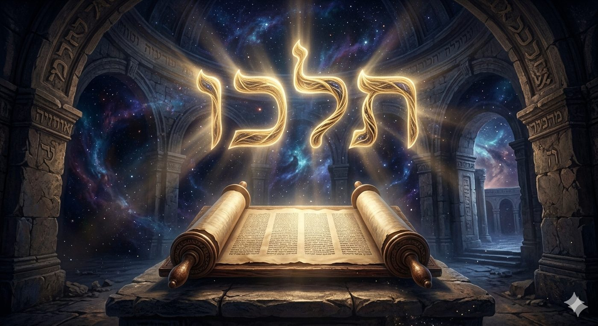
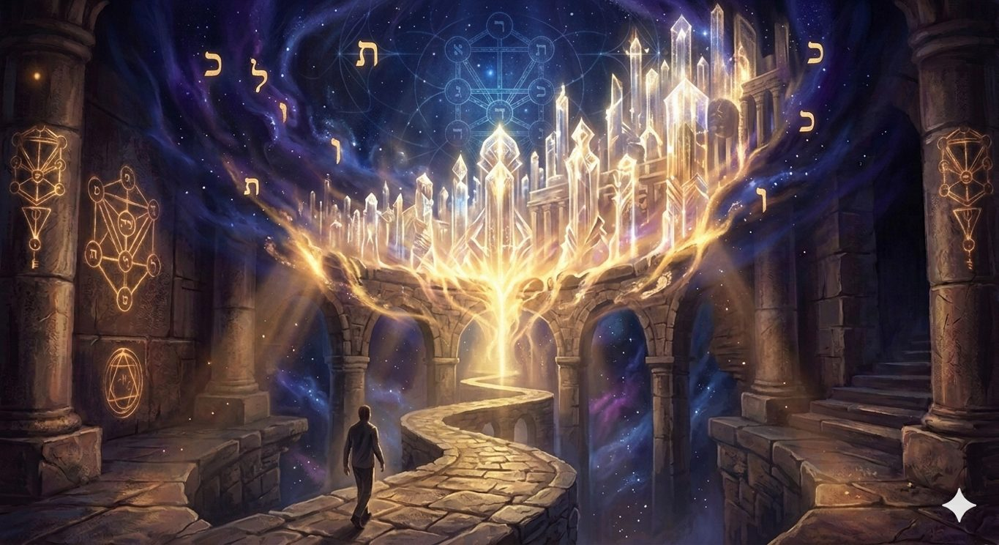
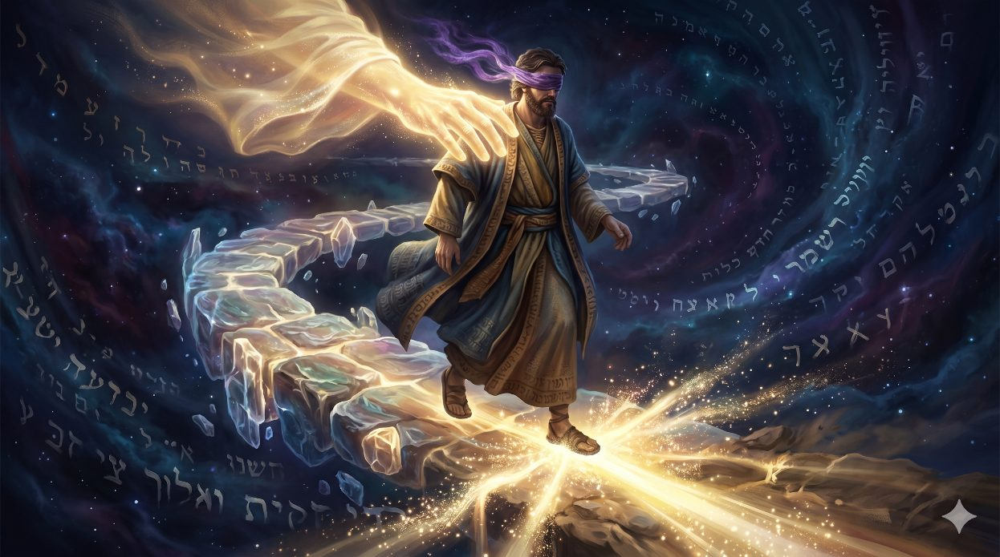
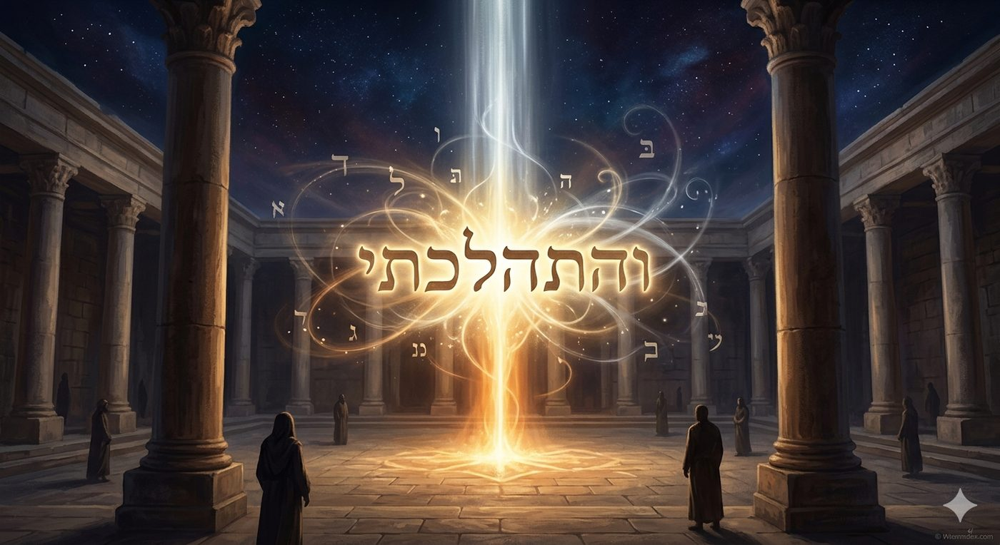
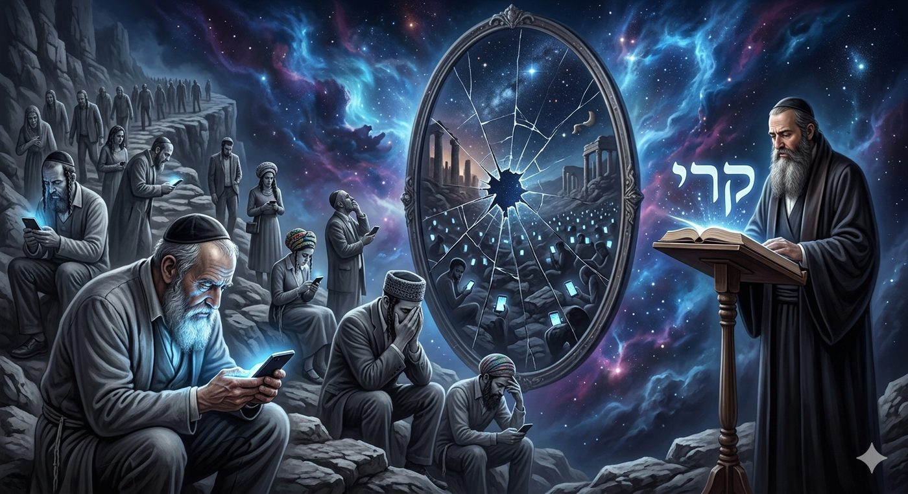
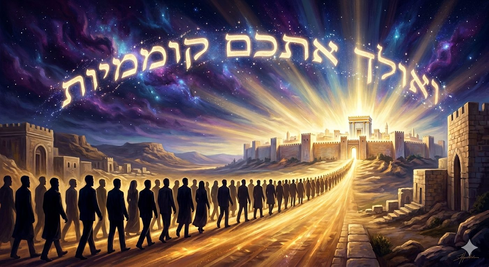

Marcher dans l’irrationnel divin
Par B.A, à Saint-Mandé, 22 Iyar 5786
La paracha de Beh’oukotai commence par une formulation qui nous interpelle directement. La Torah dit : "Im beh’oukotai teleh’ou ve'et mitzvotai tichmerou va'acitem otam" (Vayikra 26:3), ce que l'on traduit habituellement par : "si vous suivez mes statuts, observez mes commandements et les mettez en pratique." Mais une telle traduction aplatit le texte. Il faut lire le verbe hébreu dans toute sa singularité : teleh’ou ne signifie pas "suivre" ou "observer", il signifie marcher. La Torah dit littéralement : "si vous marchez dans mes statuts."
Or personne ne marche dans une loi comme on marche dans une forêt. On observe une loi, on l'accomplit, on la garde, on la respecte : autant de verbes qui traduisent une relation statique au précepte. Mais marcher ? La Torah emploie pourtant plusieurs fois ce verbe précis pour parler de la relation entre l'homme et les commandements divins. On le trouve dans le Leh' Leh'a adressé à Avraham (Berechit 12:1), dans la marche de Yaakov dans ses voies, dans la marche de “Noa'h et HaElohim” (Berechit 6:9). Comme toujours, les mots de la Torah ne sont pas simplement allégoriques et poètiques, ils ont un sens et engagent un approfondissement.

Rachi, citant le Torat Kohanim, propose une première explication : "che-tihou amelim baTorah", "que vous peiniez dans la Torah." Le labeur intellectuel acharné constitue la marche dans les statuts. Cette lecture est capitale et nous y reviendrons au chapitre 3, mais elle ne dit pas tout. Car le Sfat Emet va plus loin : marcher ne désigne pas seulement l'effort, c'est le refus de la stagnation, l'impossibilité pour l'âme authentique de se satisfaire d'un niveau spirituel atteint. L'âme qui marche est l'âme qui cherche, qui monte, qui ne se pose jamais définitivement.
Le paradoxe du verset est encore plus profond. La Torah ne dit pas que vous marcherez vers les statuts ou pour les statuts, elle dit que vous marcherez dans les statuts. Le B de beh’oukotai est un Beth d'immersion. Les h'oukim forment un espace, une atmosphère, un milieu vivant dans lequel on se déplac et cette vision transforme radicalement notre rapport à la Loi divine. Car La H’alih’a n'est plus l'observation de la Torah vue du dehors, c'est l'habitation vivante de la Torah vue de dedans.
Ce chiour explore avec l’aide du Ciel et de nos sages, le concept de la Halih’a (הליכה), la marche, à travers les parashiot de Behar et Beh'oukotai. La question centrale est posée par une formulation verbale singulière de la Torah : "Im beh’ukotai teleh’ou" (Vayikra 26:3), "si vous marchez dans Mes statuts", et son pendant divin : "Vehithalah’ti betoh’éh’em" (Vayikra 26:12), "et Je marcherai au milieu de vous".
Le chiour analyse Rachi et le Torat Kohanim sur l'exigence du labeur intellectuel pour la Torah, le Maharal de Prague (Tiferet Israel) sur la distinction entre Holh’im-la marche humaine et omdim-la stature angélique, le Nefesh HaH'aïm du Rav H'aïm de Volozhin (Chaar IV) sur la valeur essentielle de l'étude comme démarche, le Sfat Emet sur la dynamique intérieure de l'âme qui refuse la stagnation, et la vision prophétique de Zeh'aria (3:7) où le même verbe halah' scelle la promesse divine envers Yehochoua, le grand prêtre.
Im beh’oukotai teleh’ou - L'anomalie verbale tu marcheras dans Mes Statuts
Halah’, H'alah’a, H'alih’ot Olam - La dé-marche qui fonde toute la vie juive
Amelim baTorah - Le labeur dans la Torah comme première forme de marche
BeH'ar Sinaï - La montagne, pourquoi la Chemita fut donnée en marchant vers le haut
H'olh’im et Omdim - la marche humaine et la fixité des anges
H'ok et H’alih’a - Pourquoi marche-t-on dans les statuts et non dans les lois rationnelles ?
Vehithalah'ti betoh'éh'em - Je marcherai devant vous
La Toh''ah'ha et le Keri - L'arrêt de la marche et ses conséquences spirituelles
La marche contemporaine - H'alih'a à l'ère de l'intelligence artificielle et de l'optimisation de soi
Va'oleih’ eth’em komemiyout - La marche messianique, droit vers Yerouchalayim reconstruite
Le verbe halah’ (הלך) est l'un des plus fréquents de toute la Bible hébraïque. Il désigne le mouvement physique d'un corps dans l'espace. Mais ses dérivés révèlent quelque chose de beaucoup plus profond. La H'alah''a (הלכה), la loi juive en son ensemble, tire précisément son nom de ce verbe. La H'alah''a n'est pas le code, la norme, le règlement : c'est la marche, la démarche, le chemin parcouru. En hébreu, la loi juive s'appelle littéralement "la marche."
Cette étymologie n'est pas anodine. Elle signifie que la Torah ne conçoit pas le précepte comme une cage mais comme un sentier. On ne reste pas immobile dans la H'alah’'a, on y avance. Les H'alih’ot Olam (הליכות עולם), "les marches du monde" ou "les voies éternelles", titre donné à plusieurs recueils de jurisprudence, exprime cette même conviction : les lois divines ne constituent pas un monument statique mais un chemin vivant qui se déploie dans l'histoire.
La tradition hassidique a développé cette vision jusqu'à ses ultimes conséquences. Le Rav de Nemirov, disciple du Baal Chem Tov, enseignait que la H'alih'a physique du tzaddik, ses déplacements terrestres, sa démarche même, portaient en eux une dimension spirituelle. Le corps qui marche dans l'espace matérialise la progression de l'âme. Ce n'est pas du symbolisme : c'est une affirmation ontologique sur la structure de la réalité spirituelle.
Le mot H'alah' est à la racine du verbe Holeh' (celui qui marche), lequel engendre Holeh' LePhi Toummo (celui qui marche en son intégrité, Michlei 28:6), Holeh' BeTamim (celui qui marche dans l'intégrité, Psaumes 84:12), et même Holeh' Bah'ocheh' (celui qui marche dans les ténèbres, Kohelet 2:14). La qualité morale d'un homme se définit par sa marche.
L'hébreu distingue soigneusement H'oleh' (celui qui marche, verbe d'action) de Omed (celui qui se tient debout, verbe d'état). Cette distinction que le Maharal transformera en théologie anthropologique sera traitée au chapitre 5. Mais déjà, nous pouvons noter qu'Avraham est H'oleh’ Lifneï Hachem (marchant devant D.ieu, Berechit 17:1) là où Noa'h est dit avoir marché et HaElohim (avec D.ieu, Berechit 6:9). Rachi commente la différence : Avraham n'a pas besoin d'être soutenu, il marche de lui-même devant D.ieu. Noa'h, plus fragile, marche aux côtés de D.ieu comme un enfant tenu par la main. Les deux marchent, ni l'un ni l'autre ne s'arrête.
La H'alah’'a est une dé-marche, et toute la vie juive est une conversation entre un homme qui marche et un D.ieu qui marche également à sa rencontre.
Rachi, commentant im beh’oukotai teleh’ou (Vayikra 26:3), cite le Torat Kohanim 1 : "che-tihou amelim baTorah", "que vous peiniez dans la Torah." Le commentaire est bref mais vertigineux. Le mot-clé est ameil (עמל), qui désigne non pas l'effort agréable mais le labeur pénible, le travail qui use et qui coûte. Ameil est le mot du Kohelet qui gémit sur la vanité de ses peines (kol amali, Kohelet 2:11). C'est le mot des Bnei Israël en Egypte qui peinent sous le joug de Pharaon (amialo, Devarim 26:7).
Rachi dit donc que marcher dans les statuts, c'est peiner sur la Torah. Non pas l'étudier confortablement, non pas y passer quelques moments agréables, mais y peiner. Pourquoi cette exigence ? Le Maharal, dans son Tiferet Israel (chapitre 58), l'explique par la structure de la connaissance spirituelle. La Torah n'est pas une information que l'on absorbe passivement. C'est une lumière qui ne se révèle qu'en proportion de l'effort déployé pour la chercher. Plus on peine, plus la lumière s'intensifie.
Le Nefesh HaH'aïm du Rav H'aïm de Volozhin (Chaar IV, chapitre 2) pousse cette logique plus loin encore. L'étude de la Torah ne se réduit pas à un exercice intellectuel : c'est un acte cosmique. Lorsque l'homme s'immerge dans l'étude, il s'unit aux niveaux supérieurs de la réalité divine. Chaque heure d'étude creuse un canal supplémentaire par lequel la H'it'h'adout HaAdam BeTorat Hachem (l'union de l'homme à la Torah de D.ieu) s'approfondit. Pour Rav H'aïm, "abandonner un seul instant d'étude qu'il était possible d'accomplir" est présenté comme une carence grave, car chaque instant est irréversible2.
Si l'étude est une marche et si cette marche est pénible, comment la joie est-elle possible ? La réponse de la Hassidout est que la joie de la marche n'exclut pas la peine de la marche : elle la transcende. Le marcheur en montagne peine, ses muscles brûlent, sa respiration s'accélère : mais la vue qui s'ouvre à chaque détour lui procure une joie qui donne sens à la peine. La amila baTorah est une montée continue vers une vue de plus en plus vaste du réel divin.
Le Tanya (Likkouté Amarim, chapitre 34) distingue à ce sujet deux types de joie dans le service de D.ieu : la sim'h'a qui vient de comprendre, et la sim'h'a qui vient de faire. La marche pénible dans la Torah appartient aux deux : elle est comprendre en faisant et faire en comprenant. Cette double joie-peine est la signature même du ameil baTorah.
Peiner dans la Torah, c'est marcher dans la Torah : l'effort est le mouvement, et le mouvement est la vie spirituelle.
La paracha de Behar commence par une formulation qui a retenu toute l'attention de Rachi : "Vayedaber Hachem el Mocheh beH'ar Sinaï" (Vayikra 25:1), "Et D.ieu parla à Moché sur le mont Sinaï." La question de Rachi est célèbre : "Ma inyan Chemita etzel Har Sinaï ?", "Qu'est-ce que la Chemita a voir avec le mont Sinaï ?" Toutes les lois de la Torah furent données au Sinaï. Pourquoi la Torah mentionne-t-elle ici spécifiquement la montagne ?
La réponse de Rachi est connue : de même que les détails de la Chemita furent donnés au Sinaï, ainsi tous les détails de toutes les mitsvot furent donnés au Sinaï. La formulation de cette mitsva sert de modèle. Mais pour notre chiour, la question elle-même recèle quelque chose de plus profond. Pourquoi la Chemita, précisément, est-elle le modèle choisi pour illustrer que tous les détails furent donnés au Sinaï ?
Il me semble que la Chemita est le modèle parce qu'elle est la loi qui exige le plus grand mouvement spirituel. Cesser de travailler la terre pendant une année entière n'est pas une loi que l'on observe passivement : c'est une loi dans laquelle il faut marcher. L'agriculteur qui laisse son champ en jachère pendant la septième année doit se mettre en mouvement vers une autre réalité, celle où D.ieu est le seul propriétaire, celle où la confiance remplace le contrôle. Cette marche intérieure est peut-être la plus difficile de toutes.
BeH'ar Sinaï signifie donc aussi : en montant au mont Sinaï. Les paroles furent données au cours d'une ascension. Moché ne reçut pas la Torah en restant immobile au pied de la montagne : il y monta. Mais il faut ici entendre une montée spirituelle et non pas une ascension alpiniste de Moché. Le mot aliyah (עלייה), qui désigne cette montée, est apparenté à oleh (celui qui monte), mais c'est aussi le mot de la montée à la Torah (aliyah la Torah), de la montée en Israël (aliyah), de l'élevation de l'âme après la mort, nous enseignant ainsi que toute réception véritable de la Torah est une montée.
Le mot beH'ar (dans la montagne) utilise encore ce B d'immersion que nous avons rencontré dans beh'oukotai. On ne reçoit pas la Torah en la regardant de l'extérieur. On monte dans la montagne comme on marche dans les statuts. La Torah n'est pas un objet que l'on observe depuis la plaine : c'est un sommet dans lequel on s'engage. La Chemita est le modèle de toutes les lois parce qu'elle est la loi qui exige la marche la plus haute vers la confiance en D.ieu.
L'une des distinctions les plus profondes de toute la philosophie juive classique est posée par le Maharal de Prague dans son Tiferet Israel à partir d'une vision du prophète Zeh'aria. Dans la vision du chapitre 3 (Zeh'aria 3:7), D.ieu promet au Grand Prêtre Yehochoua : "Im bidrah’aï teleh’ ve'im et michmarti tichhmor... venatatiti leh’a mahleh’im bein ha'omedim ha'eleh", "si tu marches dans Mes voies et si tu gardes Ma charge... Je te donnerai des mahleh’im [des marches, des passages] parmi ces omedim [ceux qui se tiennent debout]."
Le Maharal explique : les anges-Malah’ims sont appelés omedim (ceux qui se tiennent debout) parce qu'ils n'évoluent pas. Un Malah' est fixe dans son niveau spirituel depuis sa création, il ne peut ni monter ni descendre,ce sont des êtres de perfection statique.
L'homme, en revanche, est holeh’ (celui qui marche). Il peut monter, descendre, progresser, regretter, transformer sa personnalité, élever son niveau de conscience. Cette mobilité spirituelle est précisément ce qui fait de l'homme un être supérieur aux anges. Non pas supérieur par nature, mais supérieur en potentiel. L'ange est parfait et immobile là où l'homme est imparfait et en marche. Et c'est parce qu'il marche que la promesse de Zeh’aria lui revient : mahleh’im bein ha'omedim, des marches au milieu des anges immobiles, et la promesse est renversante.
D.ieu ne dit pas à Yehochoua qu'il sera comme les anges. Il lui dit qu'il aura des passages parmi les anges. L'homme qui marche traverse le monde des mala’hims et il ne s'y installe pas. Sa condition de marcheur devient sa supériorité permanente sur les êtres fixes.

Le Sfat Emet commente ce passage en ajoutant une dimension hassidique : l'âme qui cesse de marcher ne reste pas simplement immobile, elle commence à descendre. Car dans le monde spirituel, il n'y a pas de stagnation : ou l'on monte, ou l'on descend. La aliyah (montée) est permanente ou elle n'est pas. C'est pourquoi les hassidim disent que le tzaddik ne prend jamais de vacances de son service de D.ieu : chaque instant sans effort spirituel est un instant de déclin.
Cette vision éclaire la structure de la Toh’'ah'ha que nous analyserons au chapitre 8. Les malédictions ne s'abattent pas sur celui qui fait de mauvaises choses : elles s'abattent sur celui qui cesse de marcher, qui laisse le mikré (l'indifférence hasardeuse) s'installer dans sa relation à D.ieu.
L'homme est supérieur aux anges non pas parce qu'il est parfait mais parce qu'il marche : sa mobilité spirituelle est sa grandeur.

Le texte dit im beh’oukotai teleh’ou : vous marcherez dans les h'oukim. Un h'ok (חוק) est un statut supra-rationnel, une loi divine dont la raison n'est pas accessible à l'intelligence humaine. La parah adoumah (la vache rousse), l'interdiction de mélanger lin et laine (chaatnes), l'interdiction de consommer du porc, de mélanger le lait et la viande sont des h'oukim. La Torah ne les justifie pas, elle les ordonne.
Le Talmud Bavli (Yoma 67b) distingue les mishpatim (lois rationnelles, comme l'interdiction du meurtre ou du vol) des h'oukim (lois supra-rationnelles). Les mishpatim sont des lois que les peuples du monde auraient pu se donner eux-mêmes par la raison. Les h'oukim sont des lois que seule la Torah ordonne, et dont la raison reste cachée. Satan (principe du doute, dans cette métaphore talmudique) se moque des h'oukim : pourquoi ne pas manger de porc ? Pourquoi ne pas porter de mélange lin-laine ?
Et voici le paradoxe sublime que la Hassidout a expliqué : si la Torah dit que l'on marche dans les h'oukim et non dans les mishpatim, c'est peut-être parce que c'est précisément dans les h'oukim que la marche est la plus profonde. Car pour observer un mishpat rationnel, la raison suffit. Pour observer un h'ok, seule la marche suffit, on ne comprend pas le h'ok : on marche dedans.
Le Maharal dans son Tiferet Israel formule cela ainsi : le h'ok exprime la volonté divine pure, non intermédiée par la raison humaine. Observer un h'ok, c'est se connecter directement à la volonté de D.ieu sans passer par l'intermédiaire de la compréhension intellectuelle. C'est une connexion plus profonde, plus directe, plus intime que l'observation d'un mishpat. Car dans le mishpat, l'homme se dit : "cette loi est bonne, je la comprends, je l'approuve, je l'observe." Dans le h'ok, l'homme se dit : "je ne comprends pas cette loi, mais D.ieu l'ordonne, et ma marche dans Sa volonté est plus forte que ma compréhension."
Les Hassidismes formulent la même idée avec une image saisissante : observer les mishpatim, c'est comme marcher avec les yeux ouverts. Observer les h'oukim, c'est marcher avec les yeux bandés, guidé uniquement par la main de D.ieu. Et la main de D.ieu, dans ce cas, est la Halah’a elle-même, ce sentier qui porte dans son nom même le verbe de la marche.
On marche dans les statuts parce que les statuts forment le sol de la relation la plus directe entre l'homme et D.ieu, au-delà de la raison.
Le verset 12 du chapitre 26 du Levitique est l'un des plus étranges et des plus beaux de toute la Torah. Après la liste des bénédictions promises à ceux qui marchent dans les statuts, D.ieu dit : "Vehithalah’ti betoh’éh’em vehayiti lah’em lElohim ve'atem tihyu li le'am", "et Je marcherai au milieu de vous, et Je serai votre D.ieu, et vous serez Mon peuple."
La forme hithalah'ti est réflexive et intensive : ce n'est pas simplement "Je marcherai" mais "Je me promènerai", "Je déambulerai", comme quelqu'un qui marche sans destination précise, par plaisir, par présence. On peut assimiler ce verbe au vayithalleh' Noa'h et HaElohim (Berechit 6:9) et au hithalleh' Avraham Lifnaï Hachem (Berechit 17:1). La même forme réflexive. D.ieu ne marche pas vers une destination : Il marche au milieu.

Sur ce verset, le Sfat Emet (Beh’oukotai , 5632) explique que betoh’éh’em (au milieu de vous) ne signifie pas seulement "au milieu du peuple" mais "à l'intérieur de vous". La présence divine qui déambule n'est pas une présence extérieure qui nous surveille mais une présence intérieure qui habite notre marche même. Quand l'homme marche dans les statuts, il ne marche pas seul. D.ieu marche en lui, et cet hithalleh’ divin intérieur est la source de toute énergie spirituelle.
Le Nefesh HaH'aïm (Rav H'aïm de Volozhin, Chaar I, chapitre 7) formule une théologie complémentaire : lorsque l'homme accomplit une mitsva, il ne fait pas seulement un geste humain vers D.ieu. Il crée une mahchava (une pensée), un dibour (une parole), un maasseh (un acte) qui s'élève dans les mondes supérieurs et y suscite une réponse divine. L'homme est le potentiel du monde : ses actes ont un retentissement cosmique. Et quand il marche dans les statuts, la marche divine qui s'ensuit n'est pas une récompense extérieure mais une conséquence ontologique : le mouvement crée le mouvement.
Ce verset (26:12) est suivi immédiatement (26:13) par : "Ani Hachem Eloheih’em achere hotzeiti etchem me'eretz Mitzraïm mihyot lahem avadim va'ovaleih’ eth’em komemiyout", "Moi D.ieu votre D.ieu qui vous ai fait sortir du pays d'Egypte pour ne plus être leurs esclaves, et Je vous ai fait marcher droit." Le mot komemiyout (קוממיות) désigne la posture érigée, celle de l'homme libre, tête haute. D.ieu ne dit pas qu'Il a libéré Israël : Il dit qu'Il les a fait marcher droit. La libération s'exprime par la posture de la marche.
Quand l'homme marche dans les statuts, D.ieu marche en lui, et ensemble ils avancent droit dans l'histoire.
La section des malédictions, la Toh’'ah'ha (תוכחה, le reproche ou la mise en garde), est l'une des plus dramatiques de toute la Torah. Elle couvre les versets 14 à 45 du chapitre 26 du Lévitique, et sa lecture publique en synagogue est traditionnellement faite rapidement et à voix basse par le rabbin de la communauté.
Avant de pénétrer dans son contenu, remarquons la structure grammaticale. Les malédictions ne tombent pas sur ceux qui font de mauvaises choses, ce qui serait compréhensible. Elles tombent sur ceux qui s'arrêtent de marcher. Le premier verset des malédictions (Vayikra 26:14) dit : "Ve'im lo tichme'ou li", "et si vous ne m'écoutez pas." Puis vient la progression, la plus terrible, dont la clé se trouve aux versets 21 et 23-24 : "Ve'im telh’ou imi keri", "et si vous marchez avec Moi de façon keri."
Qu'est-ce que le keri (קרי) ? Les commentateurs ne s'accordent pas, ce qui est significatif de la complexité du sujet. Rachi dit : "de façon accidentelle, comme si les événements étaient des coïncidences et non de la Providence divine." Le Ramban comprend keri comme karkaou, "de façon capricieuse ou intermittente." Ibn Ezra suggère "avec froideur, avec indifférence." Tous ces sens convergent vers le même phénomène : le keri est la marche en mode automatique, sans conscience, sans engagement, sans effort. C'est marcher dans les statuts comme on marche dans la rue : les yeux dans le vide, sans voir où l'on est.

Ce qui est saisissant, c'est que D.ieu répond au keri par du keri. Au verset 24 : "Vehalah'ti af ani imakem bekeri", "et Moi aussi Je marcherai avec vous de façon keri." D.ieu ne punit pas (il ne le fait jamais en réalité), il agit en miroir de l'homme qui crée ses conditions de punition. Si l'homme marche avec D.ieu de façon indifférente, D.ieu marche avec l'homme de façon indifférente. Si l'homme traite la relation comme une coïncidence, D.ieu traite la relation comme une coïncidence. La Toh’'ah'ha n'est pas une suite de punitions arbitraires : c'est l'exact reflet de la qualité de la marche du peuple !
Le keri devient ainsi l'arrêt spirituel de la marche tout en maintenant le mouvement physique. L'homme continue à observer les mitsvot extérieurement (il marche) mais sans intérieur (il est en mode keri). Or si D.ieu peut (esperons le) tolérer le non-respect de la Torah par ignorance ou par faiblesse, Il ne peut pas tolérer le service mécanique, “zombie”, automatique. C'est la raison pour laquelle la Toh’ah'ha est plus dure que n'importe quelle punition pour une faute ponctuelle.
Consolons nous néanmoins par le fait que la Toh’ah'ha se termine sur une promesse indestructible (Vayikra 26:44-45) : "Ve'af gam zot biheyotam be'eretz oyeveihem lo me'astim velo ge'altim leh’allotam lehaperperer beriti itam", "Et même cela : quand ils seront dans le pays de leurs ennemis, Je ne les rejetterai pas et ne les aurai pas en dégoût au point de les anéantir, au point de briser mon alliance avec eux, car Moi je suis Hachem leur D.ieu." Après des dizaines de versets de catastrophes, D.ieu revient et dit : même quand vous êtes en exil, même quand vous avez cessé de marcher, où que votre démarche vous a égaré en Exil,Je ne romps pas l'alliance.
La Toh’'ah'ha n'est pas une punition pour avoir fait de mauvaises choses : c'est le miroir fidèle d'un peuple qui a cessé de marcher avec conscience dans la relation divine.
Il existe aujourd'hui une forme moderne et séduisante du keri : l'intelligence artificielle générative, les algorithmes de recommandation, les applications d'optimisation cognitive et les promesses de la médecine régénérative. Ces technologies offrent quelque chose d'extraordinaire : le progrès sans effort, la croissance sans marche, le résultat sans labeur.
Un algorithme peut, en quelques secondes, produire des résultats exceptionnels dans tous les domaines. Une piqûre peut réparer ce que des années de discipline alimentaire et physique auraient lentement préservé. Ces technologies sont des miracles du génie humain, et elles ont des usages nobles, mais elles portent en elles un risque spirituel précis. Elles nous proposent le résultat de la marche sans la marche elle-même.
Or nous avons vu que pour la Torah, c'est la marche qui a de la valeur, pas seulement la destination. Le ameil baTorah n'est pas pénible par accident : il est pénible par dessein. Le labeur intellectuel creuse les canaux par lesquels la lumière peut ensuite circuler.
Le Nefesh HaH'aïm (Chaar IV) formule une loi qui s'avère ici étrangement précise pour notre époque : la Torah n'est assimilée que par l'effort. Rav H'aïm de Volozhin dit que les paroles de Torah s'impriment dans l'âme en proportion directe du mal qu'on s'est donné pour les étudier. Un texte absorbé passivement s'évanouit rapidement. Un texte obtenu par labeur s'inscrit dans la chair de l'âme et ne part plus.
Cette réflexion ne conduit pas à une condamnation des technologies. Elle conduit à leur utilisation juste. L'IA peut servir de préparation, de vérification, d'aide bibliographique, de traducteur. Elle ne peut pas remplacer la H'alih'a elle-même. De même qu'un bâton de marche aide le randonneur mais ne fait pas la randonnée à sa place.
La spécificité de la marche spirituelle est qu'elle laisse une trace dans celui qui marche. Un chauffeur de taxi qui emprunte tous les jours le même trajet finit par ne plus avoir besoin de GPS : le chemin est gravé dans sa mémoire musculaire. De même, celui qui marche années après années dans les statuts de la Torah finit par les porter en lui de façon organique. Cette mémoire musculaire spirituelle ne s'obtient que par la marche. Le monde moderne peut produire les fruits de la marche mais pas la marche elle-même. Le "avoir marché" n'est pas substituable.
Nous avons commencé ce chiour par l'anomalie verbale du teleh’ou. Nous le terminons par son aboutissement eschatologique. Le verset 26:13 dit : "Va'ovaleih’ eth’em komemiyout", "et Je vous ai fait marcher droit." Le mot komemiyout (קוממיות) est hapax : il n'apparaît qu'une fois dans toute la Torah. Il désigne la posture de l'homme libre, érigé, tête haute, le regard tourné vers l'horizon et non plus vers le sol.
Le Midrach (Sifra sur ce verset) commente : "komemiyout - shetihou heluh’aïm bekomah zekoufa", "komemiyout signifie que vous marcherez la taille érigée." L'esclave courbe le dos, l'homme libre se tient droit. Et D.ieu, en faisant sortir Israël d'Égypte, ne les a pas seulement libérés physiquement, Il les a fait marcher droit. La libération n'est pas complète tant que la posture n'est pas celle de la liberté.
Le prophète Ishaya (52:12) anticipe la rédemption finale en utilisant le même registre : "Lo vetahpazon tetze'ou uve'missa lo teleh’ou", "vous ne sortirez pas en hâte, vous ne partirez pas en fugitifs, car Hachem marche devant vous." La première rédemption d'Égypte fut réalisée en hâte (behipazon). La rédemption finale sera en marchant, posément, dignement, précédée de D.ieu qui marche devant. Ce ne sera pas une fuite mais une procession royale.
Le Ramban, dans son commentaire sur Beh’oukotai , soutient (sur la base de cette lecture) que les grandes bénédictions du chapitre 26 ne furent pas pleinement accomplies à l'époque du premier Temple. Elles attendent encore leur réalisation dans la perspective messianique. Chaque génération qui marche dans les statuts ajoute une couche à cette réalisation progressive. Nous sommes aussi dans cette dé-marche, et c'est peut-être ainsi qu'il faut comprendre que notre génération est celle des talons du Machia'h.

Il faut certainement voir dans ce komemiyout une allusion aux deux Temples : kom désigne la première élévation, komemiyout la double élévation, qui inclut la reconstruction. La marche vers le troisième Temple est une marche droite, la tête haute, la conscience ouverte, le cœur brûlant. Elle commence dans chaque étude de Torah, dans chaque accomplissement de mitsva, dans chaque refus du keri et de l'automatisme.
Et c'est ici que notre chiour rejoint la promesse avec laquelle il a commencé. Im beh’oukotai teleh’ou si vous marchez dans les statuts …Vehithalah’ti betoh’h’em Je marcherai au milieu de vous …Va'ovaleih’ etchem komemiyout et Je vous ferai marcher droit.
Ces trois verbes forment une promesse de la rédemption : la marche humaine appelle la marche divine, et la marche divine nous redresse. Nous ne marcherons pas seuls vers Yerouchalayim. Nous y marcherons droit, avec D.ieu qui marche en nous. En ces jours du compte du Omer, à deux semaines de Chavouot, nous sommes précisément dans ce temps de la marche. Les 49 jours du compte sont 49 pas vers la révélation du Har Sinaï. Chaque jour compté est un pas dans les statuts. Et au 50e jour, au sommet, la Torah sera de nouveau reçue, comme la confirmation d'un voyage accompli.
Car la marche messianique n'est pas un événement à venir : elle commence maintenant, dans chaque pas conscient que l'âme prend dans la direction de D.ieu.
De nous accorder la force de marcher chaque jour dans Ses statuts, même quand la marche est pénible et la direction incertaine,
De nous préserver du keri, de cet automatisme spirituel qui transforme le service sacré en geste vide.
De faire marcher nos enfants et nos élèves droit, komemiyout, la tête haute et le cœur éveillé.
De nous permettre de sentir Sa présence, Vehithalah’ti betoh’h’em, dans chaque moment d'étude, de tefila et d'accomplissement.
De nous accorder de voir de nos yeux la marche finale vers Yerouchalayim reconstruite, lorsque tous les Omdim et tous les Holh’im, les anges et les hommes, uniront leur voix dans le chant du Chir HaChirim :
"Kol dodi hineh zeh ba, medaleg al heharim" (Cantiques des Cantiques 2:8), "Voici la voix de Mon bien-aimé qui arrive, bondissant sur les montagnes."
Chabbat Chalom !
Tanakh (Bible) Vayikra (Lévitique) chapitres 25 et 26 sur la marche dans les lois et le rendez-vous divin. Berechit (Genèse) 6:9, 12:1 et 17:1 sur les déplacements des Patriarches. Zeh'aria (Zacharie) 3:7 sur la différence entre hommes et anges. Psaumes 84:12 et Proverbes 28:6 sur l'intégrité du cheminement. Kohelet (Ecclésiaste) 2:11 et 2:14 sur le labeur et la marche. Ishaya (Isaïe) 52:12 sur la marche de la délivrance. Chir HaChirim (Cantique des Cantiques) 2:8 sur le mouvement du Bien-aimé |
Littérature des Sages Torat Kohanim (Sifra), Midrash ancien sur le Lévitique liant marche et effort. Talmud Bavli Yoma 67b distinguant les lois logiques des décrets divins. Talmud Bavli Menahot 99b sur les limites de l'investissement dans l'étude. Exégèse et Philosophie Commentaires de Rachi sur l'exigence de peiner dans l'étude. Tiferet Israel du Maharal de Prague sur la supériorité de la progression humaine. Nefesh HaH'aïm de Rav H'aïm de Volozhin sur la transformation de l'âme par le labeur. Commentaires du Ramban sur l'attitude accidentelle (Keri) et l'avenir messianique. Analyses d'Ibn Ezra sur la froideur dans le service divin. Pensée Hassidique Enseignements du Sfat Emet sur le refus de la stagnation spirituelle. Tanya de Rabbi Shneur Zalman de Liadi sur la joie liée à l'action. Enseignements du Rav de Nemirov sur la marche physique comme acte spirituel. |
|---|
Le Torat Kohanim (aussi appele Sifra) est le Midrash halah’ique sur le Levitique, dont l'essentiel est attribue a l'ecole de Rabbi Yehuda bar Ilaï (Tanna du IIe siecle).↩︎
La gemara de Menahot 99b s’intérroge sur les limites de l’effort qu’il faudrait dépoyer pour étudier la torah, et Rabbi Chimon bar Yohai, “sauve” ceux qui doivent gagner leur subsistance, en leur donnant la possibilité de se contenter de la lecture du chema israel matin et soir. Mais encore faudrait-il définir le niveau de subsistance minimale qui permettrait à chacun de vivre dignement et de le comparer au niveau d’engagement dans l’étude de la Torah…↩︎